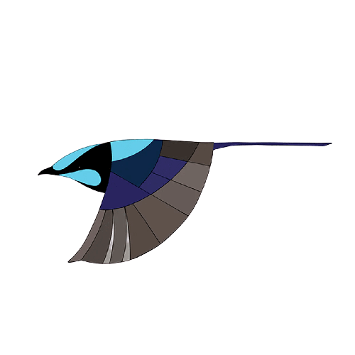

Hei! Jeg er en kengeru og er et unikt dyr for Australia. Dyret du ser ved siden av meg er en wallaby. Det er et pungdyr som ser ut som en kengeru, men er mindre!
Hei! Jeg er platymus. Jeg er en type kloakkdyr og trives godt i elver og innsjøer. Den mest kjente platymusen er Perry fra Phineas og Ferb! Fuglen over meg er en fairy wren!
